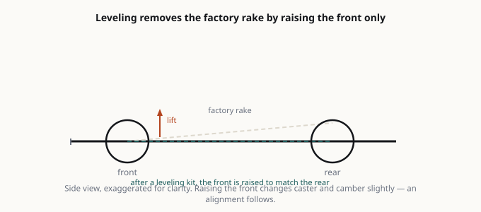

Car Mod Review Suspension  Diagram Raising a truck changes suspension geometry, not just its stance. Leveling Kit on a 2026 Silverado 1500 RST 4x4: What It Actually Changes2026-09-29 Suspension Upgrades: Springs, Coilovers, and Why Cheap Kits Ruin Cars2026-10-27